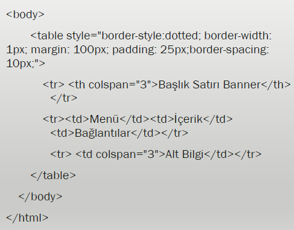

MARGIN VE PADDING

Padding; sayfa kenarı ile sayfa içeriği arasındaki boşluktur.
Margin; 2 elementin birbirine olan uzaklığıdır (boşluğudur).
margin-top: 100px; (üstten bırakılacak boşluk miktarını belirler.)
margin-bottom: 100px; (Alttan bırarkılacak boşluk mitarını belirler.)
margin-right: 100px; (Sağdan bırakılacak boşluk miktarını belirler.)
margin-left: 100px; (Soldan bırakılacak boşluk miktarını belirler.)
TABLE, TR, TD VE TH ETİKETLERİ
KATMANLAR
LAYERS
Katman < layer >, web tarayıcısı penceresinde istediğiniz bir konuma yerleştirebileceğiniz ve HTML içeriği için kullanılan dikdörtgen şeklinde bir taşıyıcı elemandır. Artık kullanılmamaktadır.
< DİV >
Div etiketi Web sitesinin ana iskeletini oluşturmaya yarayan bu etiket Web sayfasının stilini ve nasıl olması gerektiğini belirleyen boyutlarını tamamen özgürce ayarlayabildiğiniz bir Html etiketidir. Div etiketinden daha ayrıntılı bahsedecek olursak, div etiketinin yapısı dört köşesi olan ve içerisine aldığı elementlerle yüksekliği ve boyutu değişebilir. Bunun yanı sıra siz div’i oluştururken standart ölçüler tanımlayabilir veya pencere boyutuna göre genişliğinin ve uzunluğunun dinamik olmasını sağlayabilirsiniz.
< div > etiketi HTML belgesinde bir bölüm, sektör tanımlar.
< div > etiketini bloklar halinde göstermek için CSS ile biçimlendirilir.
< div > etiketi ile sayfa düzeni oluşturulurken sıklıkla CSS kullanılır.
Genellikle tarayıcılar < div > etiketinden önce ve sonra satır sonu oluştururlar. Satır sonları CSS ile değiştirilebilir.
Başa Dön
5